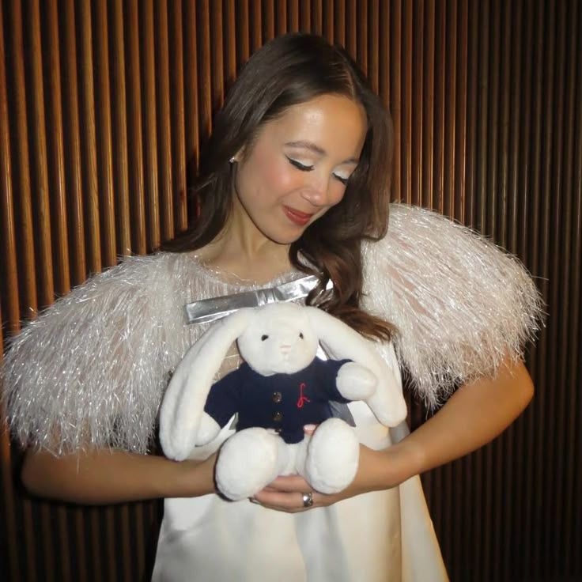
Laufey (Lín Bing Jónsdóttir) is an Icelandic singer-songwriter, known for her musical style that blends genres such as jazz pop and classical music. Laufey began performing as a cello soloist with the Iceland Symphony Orchestra at age 15. She released her debut single "Street by Street" in April of 2020. In 2021, Laufey released her debut EP, Typical of Me, and graduated from the Berklee College of Music. In 2022, she released her debut album, Everything I Know About Love, which appeared in multiple Icelandic and United States charts. Her second album, Bewitched (2023), won Best Traditional Pop Vocal Album at the 66th Annual Grammy Awards (2024) and produced the hit single "From the Start". Her third and latest album, A Matter of Time, was released on 22 August 2025. It won Best Traditional Pop Vocal Album at the 68th Annual Grammy Awards! Overall, her music provides a romantic and dreamy undertone, whilst blending classical jazz motifs with pop traditions.
⠀⠀⠀⠀⠀⠀⠀⠀⢀⡀⠀⠀⠀⠀⠀⠀⠀⠀⠀⠀⠀⠀⠀⠀⠀⠀⠀⠀⠀⠀⠀⠀⠀⠀⠀⠀⠀⠀⠀⠀ ⠀⠀⠀⠀⠀⠀⠀⣰⠋⣷⠀⠀⠀⠀⠀ ⠀⠀⢀⡼⢲⠀⠀⠀⠀⠀⠀⠀⠀ ⢀⡖⢳⠄⠀⠀⠀⠀⠀⠀⠀⠀ ⠀⠀⠀⠀⠀⠀⣸⠃⢀⣿⠖⢳⡆⠀⠀⠀⢀⡞⠀⣸⣠⠤⡄⠀⠀⠀⠀⢠⡟⠁⣸⣤⠶⡄⠀⠀⠀⠀⠀⠀ ⠀⠀⠀⠀⠀⢰⡇⣴⡟⠁⠀⡼⠁⠀⠀⠀⡾⢀⣴⠏⠀⢠⠇⠀⠀⠀⠀⡾⢀⣴⠋⠀⢰⠇⠀⠀⠀⠀⠀⠀ ⠀⠀⣀⠴⠋⠉⠘⢹⡇⢀⡼⠳⠤⣤⡤⠒⠣⢟⡇⠀⢠⣏⣀⡀⣠⠴⠚⠣⢯⡇⠀⣠⢯⣄⣀⠀⠀⠀⠀⠀ ⠀⡼⠃⢀⣄⠀⠀⠘⠓⠋⠀⢠⡞⠁⠀⠀⠀⠘⢧⠴⠋⠀⢠⠟⠁⠀⠀⠀⠘⠧⠞⠁⠀⠀⠈⠙⢦⡀⠀⠀ ⢸⡇⠀⠈⠉⠀⠀⠀⠀⠀⢠⣏⡀⠐⠟⠃⠀⠀⠀⠀⠀⢠⣏⠀⠘⠛⠁⠀⠀⠀⠀⠀⠀⠀⠀⠀ ⠀⠹⡄⠀ ⠀⠙⠦⣤⣀⣤⠤⠀⠀⠀⠈⠳⣄⡀⠀⠀⢀⠀⠀⠀⠀⠀⠻⢆⣀⢀⡀⣀⠀⠀⠀⠀⠀⠀⠀⠀ ⠀⠀⣿⠀ ⠀⠀⠀⢻⡀⠀⡀⠀⠀⠀⠀⠀⠀⢻⠉⠉⠁⠀⠀⠀⠀⠀⠀⠀⢹⡉⠉⠀⠀⠀⠀⠀⠀⠀⠀⠀⠀ ⠀⡿⣄ ⠀⠀⠀⢨⠇⢀⡿⠀⠀⢀⣀⡤⠄⠈⣧⠀⢲⠀⠀⠀⠀⢀⡀⠀⠈⣷⠀⢸⡀⠀⠀⠀⣀⡀⠀⠀⠀ ⠀⣡⠟ ⠀⠀⠀⠙⠒⢯⣀⣠⠴⠻⢧⣄⠤⠼⢥⣴⠋⠀⢀⡴⡟⠉⢀⣀⣸⡧⣴⠋⢀⣀⡴⣟⣁⣀⣀⡠⠴⠊⠁⠀ ⠀⠀⠀⠀⠀⠀⠀⠀⠀⠀⠀⠀⠀⠀⠀⠈⠙⠉⠁⠀⠉⠉⠉⠀⠀⠀⠈⠉⠉⠀⠀⠈⠉⠁⠀⠀⠀⠀⠀⠀
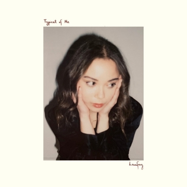
Typical of Me - debut EP released in 2021
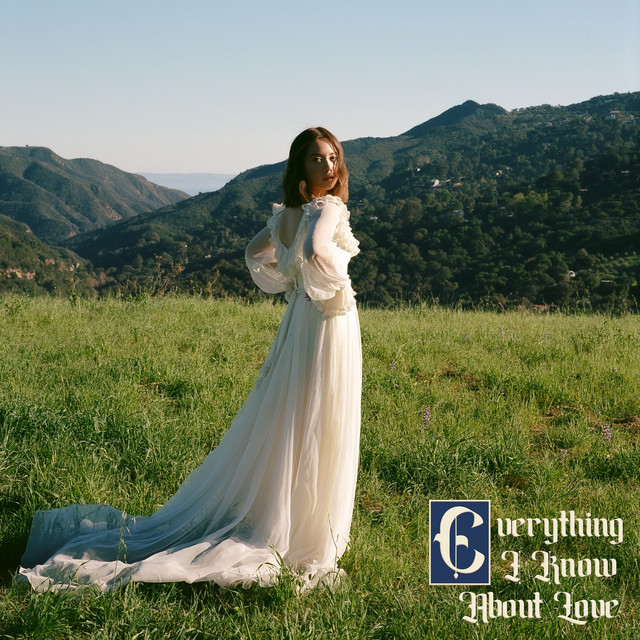
Everything I know About Love - debut album released in 2022
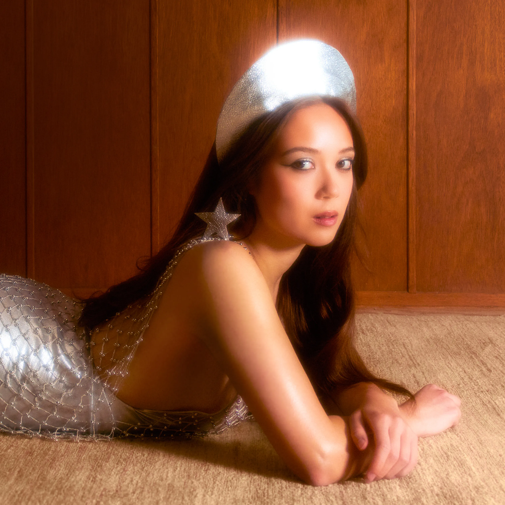
Bewicthed - second studio album released in 2023, featuring the successful song "From the Start"
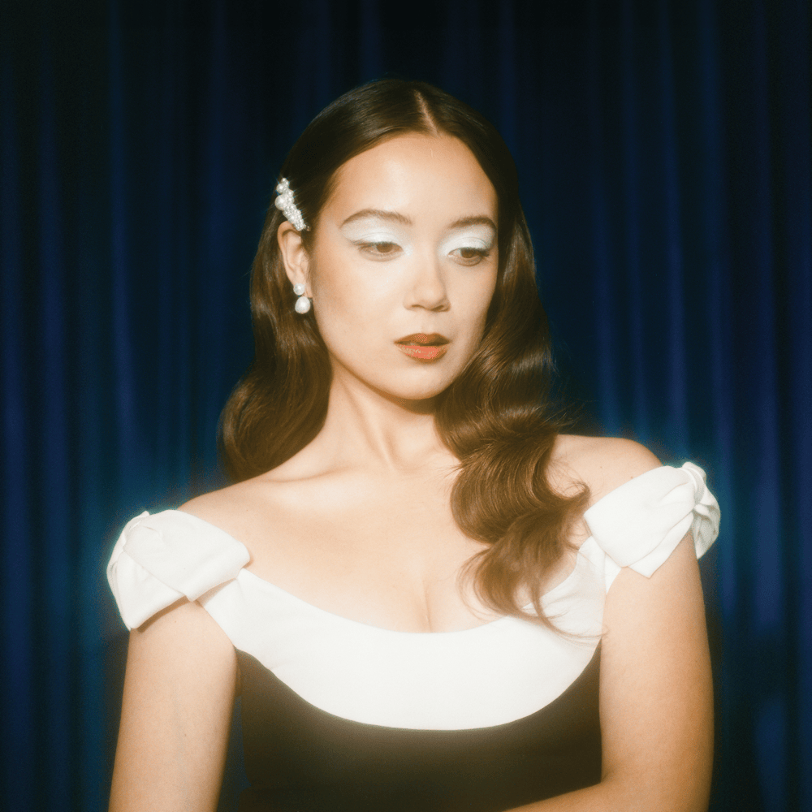
Bewitched: Goddess Edition - reissue album released in 2024
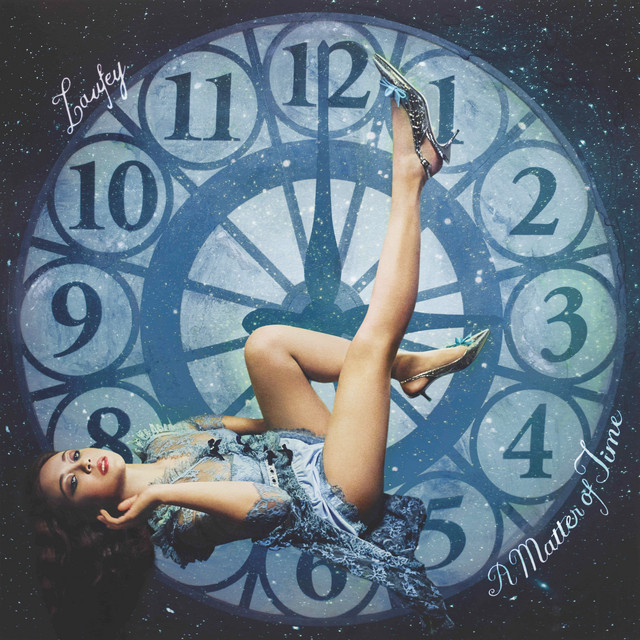
A Matter of Time - third studio album released in 2025
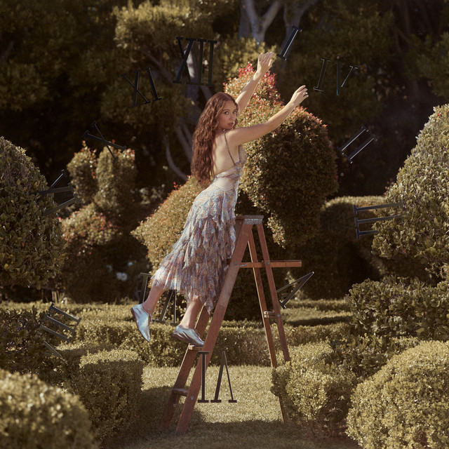
A Matter of Time: Final Hour - reissue album released in 2026
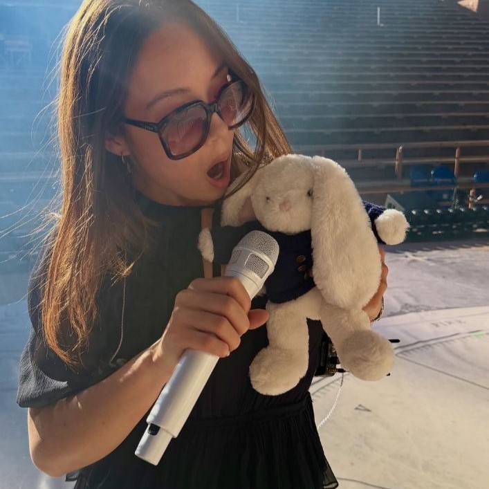
Mei Mei the Bunny is Laufey's brand mascot, but more importantly her alter ego. The bunny's name in Chinese means "younger sister" and often makes apperances on her socials or concerts. Laufey also recently released a children's book, that tells the story of the little rabbit violinist learning to how to overcome stage fright and mistakes!
⠀⠀⠀⠀⠀⠀⠀⠀⠀⠀⠀⠀⠀⠀⠀⠀⠀⠀⠀⠀⠀⠀⠀⠀⠀⠀⠀⠀⠀⠀⠀⠀⠀⠀⠀⠀⠀⠀⠀⠀⠀⠀⠀⠀⠀⠀⠀⠀⠀⠀⠀⠀⠀⠀⠀⠀⠀⠀⠀⠀⠀⠀⠀⠀⠀⠀⠀⠀⠀⠀⠀⠀⠀⠀⠀⠀⠀⠀⠀⠀⠀⠀⠀⠀⠀⠀⠀⠀⠀⠀⠀⠀⠀⠀⠀⠀⠀⠀⠀⠀⠀⠀⣷⠀⠀⠀ ⠀⠀⠀⠀⠀⠀⠀⠀⠀⠀⠀⠀⠀⠀⠀⠀⠀⠀⠀⠀⠀⠀⠀⠀⠀⠀⠀⠀⠀⠀⠀⠀⠀⠀⠀⠀⠀⠀⠀⠀⠀⠀⠀⠀⠀⠀⠀⠀⠀⠀⠀⠀⠀⠀⠀⠀⠀⠀⠀⠀⠀⠀⠀⠀⠀⠀⠀⠀⠀⠀⠀⠀⠀⠀⠀⠀⠀⠀⠀⠀⠀⠀⠀⠀⠀⠀⠀⠀⠀⠀⠀⠀⠀⠀⠀⠀⠀⠀⠀⠀⢀⣤⣿⣿⠟⠁ ⠀⠀⠀⠀⠀⠀⠀⠀⠀⠀⠀⠀⠀⠀⠀⠀⠀⠀⠀⠀⠀⠀⠀⠀⠀⠀⠀⠀⠀⠀⠀⠀⠀⠀⠀⠀⠀⠀⠀⠀⠀⠀⠀⠀⠀⠀⠀⠀⠀⠀⠀⠀⠀⠀⠀⠀⠀⠀⠀⠀⠀⠀⠀⠀⠀⠀⠀⠀⠀⠀⠀⠀⠀⠀⠀⠀⠀⠀⠀⠀⠀⠀⠀⠀⠀⠀⠀⠀⠀⠀⠀⠀⠀⠀⠀⠀⠀⠀⠀⠀⠈⠀⠉⢿⡁⠀ ⠀⠀⠀⠀⠀⠀⠀⠀⠀⠀⠀⠀⠀⠀⠀⠀⠀⠀⠀⠀⠀⠀⠀⠀⠀⠀⠀⠀⠀⠀⠀⠀⠀⠀⠀⠀⠀⠀⠀⠀⠀⠀⣠⣤⣤⡀⠀⠀⠀⠀⠀⠀⠀⠀⠀⠀⠀⠀⠀⠀⠀⠀⠀⠀⠀⠀⠀⠀⠀⠀⠀⠀⠀⠀⠀⠀⠀⠀⠀⠀⠀⠀⠀⠀⠀⠀⠀⠀⠀⠀⢀⣴⢶⡶⢶⣦⣄⣀⠀⠀⠀⠀⠀⠀⠀⠀ ⠀⠀⠀⠀⠀⠀⠀⠀⠀⠀⠀⠀⠀⠀⠀⠀⠀⠀⠀⠀⠀⠀⠀⠀⠀⠀⠀⠀⢤⣀⣿⣤⡄⠀⠀⠀⠀⠀⠀⣴⢷⣦⣽⣾⣋⣿⣄⠀⠀⠀⠀⠀⠀⠀⠀⠀⠀⠀⠀⠀⠀⠀⠀⠀⠀⠀⠀⠀⠀⠀⠀⠀⠀⠀⠀⠀⠀⠀⠀⠀⠀⠀⠀⠀⠀⠀⠀⠀⠀⠀⢘⣻⣶⣭⣿⡧⣋⢧⣻⣝⣦⡀⠀⠀⠀⠀ ⠀⠀⠀⠀⠀⠀⠀⠀⠀⠀⠀⠀⠀⠀⠀⠀⠀⠀⠀⠀⠀⠀⠀⠀⠀⠀⠀⠀⠀⣿⣿⡿⠦⠀⢀⡀⠀⠀⠀⠹⣟⣮⢽⢿⣷⡭⢿⣆⠀⠀⠀⠀⠀⠀⠀⠀⠀⠀⠀⠀⠀⠀⠀⠀⠀⠀⠀⠀⠀⠀⠀⠀⠀⠀⠀⠀⠀⠀⠀⠀⠀⠀⠀⠀⠀⠀⠀⠀⠀⣼⡟⣭⣚⡴⣣⡜⡱⢎⡽⢻⢼⣇⠀⠀⠀⠀ ⠀⠀⠀⠀⠀⠀⠀⠀⠀⠀⠀⠀⠀⠀⠀⠀⠀⠀⠀⠀⠀⠀⠀⠀⠀⠀⠀⠀⠈⠉⢻⠃⠀⢰⣿⢯⣷⣄⣤⣀⠘⣿⡞⣼⢩⣛⡵⣺⢷⠀⠀⠀⠀⠀⠀⠀⠀⠀⠀⠀⠀⠀⠀⠀⠀⠀⠀⠀⠀⠀⠀⠀⠀⠀⠀⠀⠀⠀⠀⠀⠀⠀⠀⠀⠀⠀⠀⠀⠀⠈⠛⣉⣯⡿⡹⣜⡱⢫⡜⣭⣾⣿⣿⣻⠖⠀ ⠀⠀⠀⠀⠀⠀⠀⠀⠀⠀⠀⢀⣤⣀⣼⣶⢦⡀⠀⠀⠀⠀⠀⠀⠀⠀⠀⠀⠀⠀⠀⢀⣴⠾⡟⢮⡹⢛⣾⣽⡻⣟⡱⢎⣱⠹⣟⣱⣻⠇⠀⠀⠀⠀⠀⠀⠀⢀⡄⠀⠀⠀⠀⠀⠀⠀⠀⠀⠀⠀⠀⠀⠀⠀⠀⠀⠀⠀⠀⠀⠀⠀⠀⠀⠀⠀⢀⣴⢦⣴⠾⣿⣧⣿⣷⡦⣙⢇⡞⢭⡓⡶⣧⣟⡷⠀ ⠀⠀⠀⠀⠀⠀⠀⠀⠀⠀⠀⣿⢱⣏⣿⣿⡎⣷⠀⠀⠀⠀⠀⢀⡆⠀⠀⠀⠀⠀⣰⡿⢇⡏⡸⢇⡸⣉⣿⣿⡷⡎⢱⠏⣶⢹⣶⣿⠏⠀⠀⠀⠀⠀⠀⣶⣀⣸⡇⠀⠀⠀⠀⠀⠀⠀⠀⠀⠀⠀⠀⠀⠀⠀⠀⠀⠀⠀⠀⠀⡀⠀⠀⠀⠀⠀⠈⣿⠏⡎⢷⡉⣿⣿⣿⣱⠹⣾⡾⠷⠿⠿⠏⠉⠀⠀ ⠀⠀⠀⠀⠀⢀⣀⣾⠀⠀⠀⠸⣿⢾⡹⣿⡽⢎⣇⡀⠀⠀⠹⣿⣿⡿⠂⠀⠀⢸⣏⣷⡿⢎⡱⣋⣵⣌⣻⣻⢵⣩⢇⡻⡔⣫⢛⣷⣄⠀⠀⠀⠀⠀⠀⠈⢻⣿⡿⠷⠂⠀⠀⠀⠀⠀⣀⣀⠀⣶⣳⣦⡀⠀⠀⠀⠀⠰⣶⣼⣇⣴⡄⠀⠀⢀⡾⡟⣬⡙⢦⡹⡼⢇⣿⣽⠿⠉⠀⠀⡀⠀⠀⠀⠀⠀ ⠀⠀⠀⠀⠀⠈⢻⡿⠛⠗⠀⠀⢸⡷⣏⢮⡙⣯⡼⡽⣌⠀⠠⡟⢻⡂⠀⠀⠀⠀⠉⢽⣯⡿⠚⠉⠁⠀⠈⠉⠙⠳⣯⣶⡱⣹⣯⣮⡽⣆⠀⠀⠀⠀⠀⠀⠸⠏⠏⠀⢠⣀⡀⠀⠀⠸⣿⣹⢿⣿⣟⡽⣻⣄⠀⠀⠀⠀⢹⣿⣿⠁⠁⠀⢠⣿⢳⡽⢴⠹⣜⣷⠟⠋⠉⠈⠀⠀⠀⣸⣇⠀⠀⠀⠀⠀ ⠀⠀⠀⠀⠀⠀⠚⠃⠀⠀⠀⣴⡾⢳⡜⢦⠭⣙⢏⣳⡿⠀⠀⠀⠀⠀⠀⠀⠀⠀⠀⠀⠀⠀⠀⠀⠀⠀⠀⠀⠀⠀⠈⠻⣷⣧⣽⡏⠛⠃⠀⡄⠀⠀⠀⠀⠀⠀⠀ ⠀⢿⣫⢷⡶⢶⣤⣽⣶⡝⣎⢿⡿⡱⢿⣄⠀⠀⠀⠉⠁⠈⠀⠀⠀⠻⣮⣿⡝⣧⣿⠋⠀⠀⠀⠀⠀⠀⠈⠛⢿⣿⠛⠀⠀⠀⠀ ⠀⠀⠀⠀⠀⠀⠀⠀⠀⢠⣿⡻⣥⣷⣜⡹⣎⢷⣾⠛⠁⠀⠀⠀⠀⠀⠀⠀⠀⠀⠀⠀⠀⠀⠀⠀⠀⠀⠀⠀⠀⠀⠀⠀⠀⠉⠉⠈⠸⣦⣼⣷⣤⡄⠀⠀⠀⠀⠀ ⠀⣾⡻⢬⡹⣙⣾⣼⣯⣝⢎⢖⡣⣝⣳⢮⢷⡀⠀⠀⠀⠀⠀⠀⠀⠀⠀⠿⣽⠿⠁⢀⠀⢠⠀⠀⠀⠀⠀⠀⢸⠚⠀⠀⠀⠀⠀ ⠀⠀⠀⠀⠀⠀⠀⢀⣀⣼⡻⣙⣿⣿⣿⡳⣌⡿⢮⣿⠀⠀⠀⠀⠀⠀⠀⠀⠀⠀⠀⠀⠀⠀⠀⠀⠀⠀⠀⠀⠀⠀⠀⠀⠀⠀⠀⠀⠀⢸⣿⣿⠏⠀⠀⠀⠀⠀⠀ ⠀⢻⣱⢣⠳⣥⣻⣿⣿⡍⡞⡬⢲⡹⣟⢮⣿⠇⠀⠀⠀⠀⠀⠀⠀⠀⠀⠀⠀⠀⠀⣸⣶⣿⣀⠀⠀⠀⠀⠀⠀⠀⠀⠀⠀⠀⠀ ⠀⠀⠀⠀⠀⠀⠀⣿⢏⡯⣱⢣⢛⣏⢻⣕⣾⠋⠉⠁⠀⠀⠀⠀⠀⠀⠀⠀⠀⠀⠀⠀⠀⠀⠀⠀⠀⠀⠀⠀⠀⠀⠀⠀⠀⠀⠀⠀⠀⠙⠁⠈⠉⠀⠀⠀⠀⠀⠀⠀ ⢰⣿⢣⣛⣴⣿⡾⢵⣮⣱⢣⢯⣵⣾⡿⢯⡀⠀⠀⠀⠀⠀⠀⠀⠀⠀⠀⠀⠀⠙⣻⣿⡏⠉⠀⠀⠀⠀⠀⠀⠀⠀⠀⠀⠀⠀ ⢀⣄⣿⣤⡄⠀⠀⠈⠙⠻⣥⣝⣮⡜⣭⡿⣽⡇⠀⠀⠀⠀⠀⠀⠀⠀⠀⠀⠀⠀⠀⠀⠀⠀⠀⠀⠀⠀⠀⠀⠀⠀⠀⠀⠀⠀⠀⠀⠀⠀⠀⠀⠀⠀⠀⠀⠀⠀⠀ ⠀⠙⠻⢾⠏⠛⠛⠀⠹⢷⣯⣾⡹⣾⢿⣳⣿⡇⠀⠀⠀⠀⠀⠀⠀⠀⠀⠀⠀⠀⠋⠘⠃⠀⠀⠀⠀⠀⠀⠀⠀⠀⠀⠀⠀⠀ ⠀⢹⡿⣿⡀⠀⠀⠀⠀⠀⠀⠀⠀⠉⠉⠉⠉⠀⠀⠀⠀⠀⠀⠀⠀⠀⠀⠀⠀⠀⠀⠀⠀⠀⠀⠀⠀⠀⠀⠀⠀⠀⠀⠀⠀⠀⠀⠀⠀⠀⠀⠀⠀⠀⠀⠀⠀⠀⠀⠀⠀⠀⠀⠀⠀⠀⠀⠀ ⠀⠀⠙⠻⡷⡿⠆⠉⠉⠁⠀⠀⠀⠀⠀⠀⠀⠀⠀⠀⠀⠀⠀⠀⠀⠀⠀⠀⠀⠀⠀⠀⠀⠀⠀⠀⠀⠀ ⠀⠘⠁⠈⠀⠀⠀⠀⠀⠀⠀⠀⠀⠀⠀⠀⠀⠀⠀⠀⠀⠀⠀⠀⠀⠀⠀⠀⠀⠀⠀⠀⠀⠀⠀⠀⠀⠀⠀⠀⠀⠀⠀⠀⠀⠀⠀⠀⠀⠀⠀⠀⠀⠀⠀⠀⠀⠀⠀⠀⠀⠀⠀⠀⠀⠀⠀⠀⠀⠀⠀⠀⠀⠀⠀⠀⠀⠀⠀⠀⠀⠀⠀⠀⠀⠀⠀⠀⠀⠀⠀⠀⠀⠀⠀⠀⠀⠀⠀⠀⠀⠀⠀⠀⠀⠀
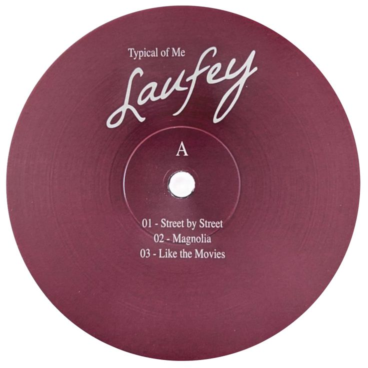
Best Friend
mood: happy, girlhood
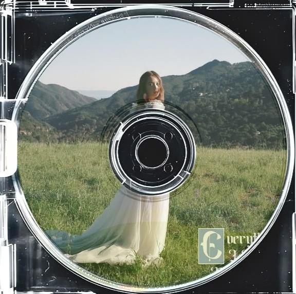
Fragile
mood: dreamy, lovey-dovey
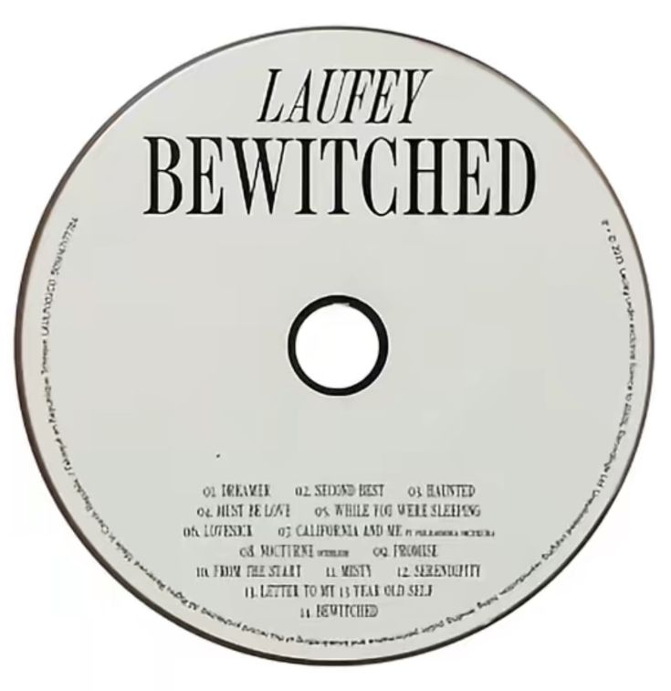
Letter To My 13 Year Old Self
mood: sad, nostalgia
Goddess
mood: sad, anger
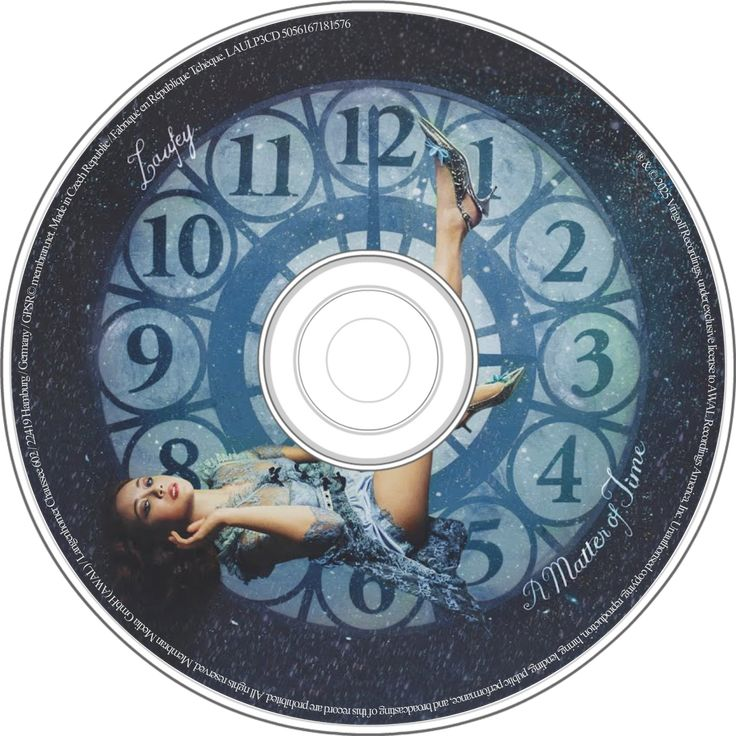
Too Little, Too Late
mood: sad, anger